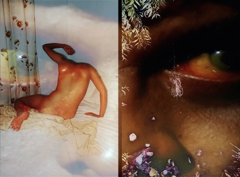

The Lost Head & The Bird

Sohrab Hura
|
IN
2018 S+K+P+V: Sohrab Hura – M: Wendy Marijnissen: Bending the Frame, Sjoerd, Bruil, Hannes d´Hoine Website Sohrab Hura
|
Tuesday 16 oct 8.30 pm werkstattkino
The artist´s response to the current socio-political climate in India. The film opens a window into hidden aspects of contemporary India: an absurd and chaotic world where the boundaries between fact and fiction are blurred; and where the undercurrents of caste, sexual, religious and political violence lurk beneath the surface. Short story and photo essay by Indian Magnum nominee Sohrab Hura.
Sohrab Hura Born in 1981 in a small town in West Bengal, India, he grew up changing his ambitions from one exciting thing to another. Today he is a photographer, after having completed his Masters in Economics. He is currently the coordinator of the Anjali House children’s photography workshop that takes place during the Angkor Photo Festival, Cambodia every year and his home base is New Delhi, India.
|
| Films Pati 2010 – Sweet Life 2017 – The Lost Head & The Bird 2018
|